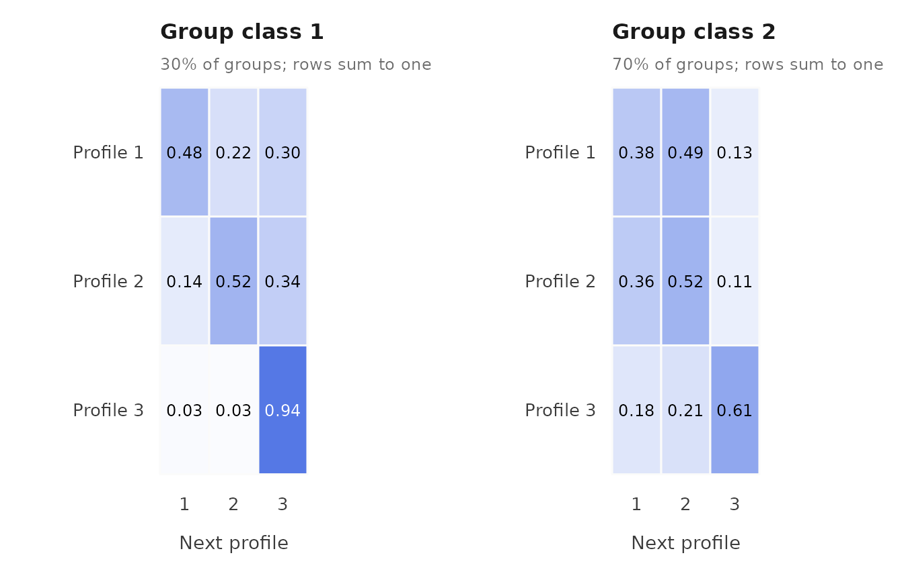
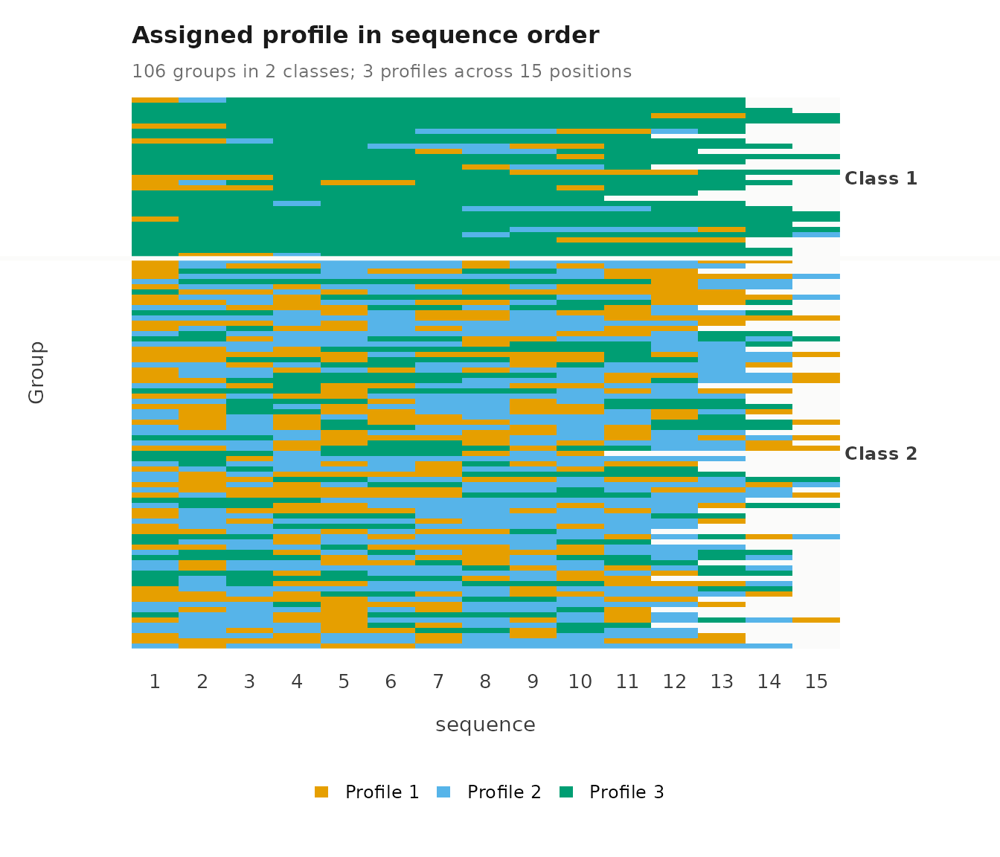
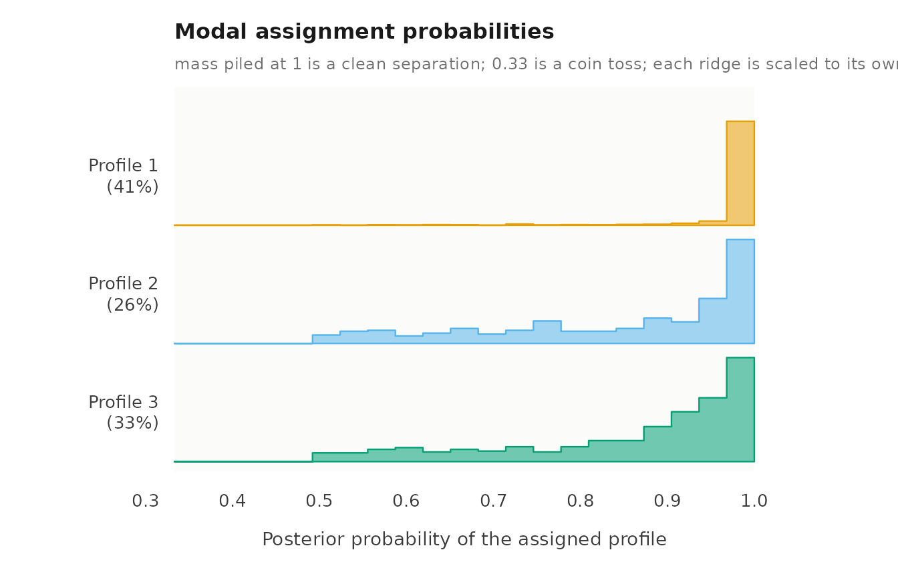
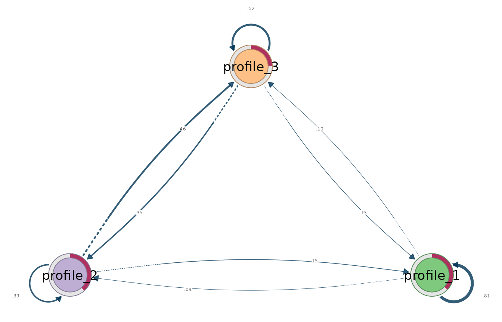
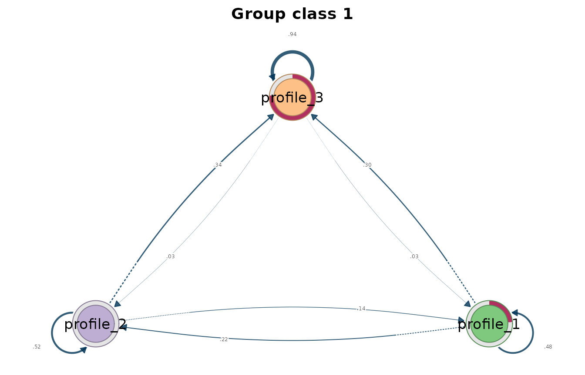
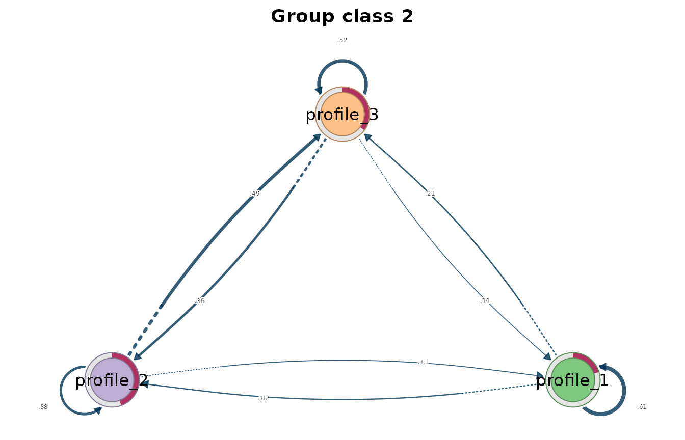

Latent transition analysis
Written by Mohammed Saqr and Sonsoles López-Pernas
Source:vignettes/lta.Rmd
lta.RmdLatent transition analysis (LTA) estimates latent profiles at each occasion and the probability of moving from one profile to another between consecutive occasions. With group classes, each class has its own starting probabilities and its own transition matrix, so classes separate groups that change differently over time.
Data
course_engagement has one row per course enrolment:
1,422 enrolments from 106 students. lta() needs three kinds
of variables.
-
Group:
studentidentifies whose occasions belong together. -
Occasion order:
sequenceis the position of each course in the student’s history. Students can have different numbers of occasions. -
Indicators: five activity measures
(
browse,lectures,forum_read,forum_post,attendance), each standardized within course, so 0 is the course average.
Fit
To fit the model, we call lta() with vars
for the indicators, id for the group, time for
the occasion order, n_profiles for the number of profiles,
n_group_classes for the number of group classes,
n_starts for the number of random EM starts, and
seed for reproducible starts.
moves <- lta(course_engagement,
vars = c("browse", "lectures", "forum_read", "forum_post",
"attendance"),
id = "student", time = "sequence",
n_profiles = 3, n_group_classes = 2, n_starts = 10, seed = 1)
moves
#> Latent transition model: 3 profiles, 2 group classes
#> 1422 observations in 106 groups, up to 15 occasions (unbalanced, observed grid)
#> Log likelihood: -8242.967626; 47 parameters; BIC (groups): 16705.1169
#> Converged: TRUE after 100 iterations; best of 10 starts
#>
#> profile browse lectures forum_read forum_post attendance count proportion
#> 1 -0.776 -0.612 -0.888 -0.761 -0.929 579 0.407
#> 2 0.705 0.711 0.806 0.746 1.122 374 0.263
#> 3 0.395 0.188 0.453 0.344 0.252 469 0.330
#>
#> Variances and standard errors: get_results(x, "profiles").
#> Every other table: get_results(x, what = ), or get_results(x, "all").To check whether the starts agree, we call get_results()
with "starts". Starts that reach the same log likelihood
support the solution.
get_results(moves, "starts")
#> start log_likelihood converged iterations error
#> 1 1 -8243 TRUE 91 <NA>
#> 2 2 -8243 TRUE 84 <NA>
#> 3 3 -8243 TRUE 99 <NA>
#> 4 4 -8243 TRUE 121 <NA>
#> 5 5 -8243 TRUE 99 <NA>
#> 6 6 -8243 TRUE 90 <NA>
#> 7 7 -8243 TRUE 100 <NA>
#> 8 8 -8243 TRUE 189 <NA>
#> 9 9 -8243 TRUE 83 <NA>
#> 10 10 -8243 TRUE 83 <NA>Profiles
To see the profiles, we call plot() on the fit. Each
line is a profile’s mean on each indicator, and point size shows how
common the profile is.
plot(moves)
To compare profiles on a common scale, we call plot()
with what = "heatmap", which shows each mean in standard
deviations from the indicator’s overall mean.
plot(moves, what = "heatmap")
Starting probabilities
To obtain the starting probabilities, we call
get_results() with "initial".
probability is the chance of starting in each profile,
prevalence the expected share of all occasions in it, and
group_class_probability the share of groups in the
class.
get_results(moves, "initial")
#> group_class profile probability prevalence group_class_probability
#> 1 1 1 7.62e-01 0.8189 0.301
#> 2 1 2 2.38e-01 0.0969 0.301
#> 3 1 3 3.45e-10 0.0842 0.301
#> 4 2 1 2.03e-01 0.2296 0.699
#> 5 2 2 4.45e-01 0.3345 0.699
#> 6 2 3 3.51e-01 0.4359 0.699Transitions
To obtain the transition probabilities, we call
get_results() with "transitions".
probability is the chance of moving from profile
from to profile to at the next occasion, and
the probabilities out of each profile sum to one. stable
marks staying in the same profile, expected_count is the
expected number of such moves in the data, and
estimated = FALSE marks a row the data cannot inform.
get_results(moves, "transitions")
#> group_class from to probability expected_count stable estimated group_class_probability
#> 1 1 1 1 0.9385 303.37 TRUE TRUE 0.301
#> 2 1 1 2 0.0313 10.12 FALSE TRUE 0.301
#> 3 1 1 3 0.0302 9.76 FALSE TRUE 0.301
#> 4 1 2 1 0.2965 11.69 FALSE TRUE 0.301
#> 5 1 2 2 0.4824 19.01 TRUE TRUE 0.301
#> 6 1 2 3 0.2211 8.72 FALSE TRUE 0.301
#> 7 1 3 1 0.3374 11.40 FALSE TRUE 0.301
#> 8 1 3 2 0.1419 4.79 FALSE TRUE 0.301
#> 9 1 3 3 0.5207 17.58 TRUE TRUE 0.301
#> 10 2 1 1 0.6144 127.79 TRUE TRUE 0.699
#> 11 2 1 2 0.1764 36.67 FALSE TRUE 0.699
#> 12 2 1 3 0.2092 43.52 FALSE TRUE 0.699
#> 13 2 2 1 0.1276 38.97 FALSE TRUE 0.699
#> 14 2 2 2 0.3786 115.61 TRUE TRUE 0.699
#> 15 2 2 3 0.4938 150.82 FALSE TRUE 0.699
#> 16 2 3 1 0.1141 46.33 FALSE TRUE 0.699
#> 17 2 3 2 0.3622 147.07 FALSE TRUE 0.699
#> 18 2 3 3 0.5238 212.79 TRUE TRUE 0.699To draw the transition matrices, we call plot() with
what = "transitions": one heatmap per group class, current
profile in rows and next profile in columns.
plot(moves, what = "transitions")
Sequences
To see each group’s path, we call plot() with
what = "sequences": one row per group, coloured by its most
probable profile at each occasion. These assignments ignore
classification uncertainty.
plot(moves, what = "sequences")
Classification
To obtain classification certainty, we call
get_results() with "entropy". Relative entropy
is reported for occasions and for groups: 1 means every case is assigned
with certainty, 0 means no separation.
get_results(moves, "entropy")
#> level n_classes n_units entropy_sum relative_entropy
#> 1 individuals 3 1422 309.8 0.802
#> 2 groups 2 106 16.4 0.777To see where the uncertainty lies, we call plot() with
what = "entropy" for the per-case uncertainty within each
profile, and with what = "posteriors" for the posterior
probability of each case’s assigned profile.
plot(moves, what = "entropy")
plot(moves, what = "posteriors")
Transition networks
To analyse the transitions as networks, we call
get_tna() for one network pooled over group classes and
get_group_tna() for one network per class. Both return tna models built from
the estimated transitions, which plot() draws.

plot(get_group_tna(moves))

Assumptions
- The next profile depends only on the current profile and the group class, and transition probabilities are the same at every occasion.
- Profiles have the same definition at every occasion.
- Indicators are independent within a profile (the default diagonal
covariance;
covariance_model = "full"relaxes it). - Standard errors, likelihood-ratio tests and class enumeration are not available for this model.